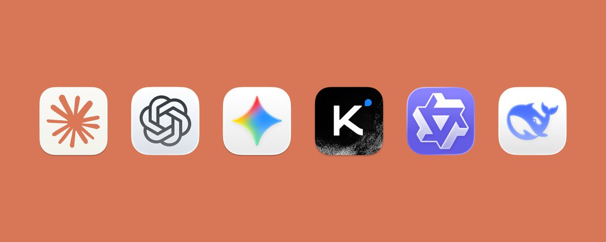

你不知道的大模型训练：原理、路径与新实践
2026 年的差距，越来越在预训练后面
先看这五句
- 用户感受到的提升，多半不是再多训一点语料。InstructGPT 的 1.3B 对齐模型能在偏好评测里赢过 175B 的 GPT-3。
- 预训练是底座，数据配方和系统约束在开训前就锁死。词表、窗口、单卡可运行，都不是发布时再补的功能。
- 后训练是多阶段流水线。DeepSeek-R1：冷启动 SFT → 可验证 RL（GRPO）→ 拒绝采样再 SFT → 有益性/安全。
- Eval、grader、reward 在定义目标。只看最终答案会走捷径；可见 CoT 不能当成完整真相。
- 到了 Agent，优化对象扩到环境和 harness。同一个底模只改 harness，benchmark 上可以拉开数倍。

这是一份阅读笔记，不是原文转载。Tw93 写给非专业读者：2026 年模型突然变强，往往是后训练、评测、奖励、Agent 训练和蒸馏几块一起到位，而不是单一因素。
预训练、数据与系统
预训练把语言分布和知识压进参数，并给后面的能力激活留空间。听不听指令、稳不稳，它管不到。规模定律更像预算分配：下一轮该堆参数还是堆数据？很多模型不是做小了，是欠训练。
开训前就定型的东西：tokenizer、context 长度、要不要多模态、要不要单卡可运行。Llama2 词表 32K，Llama3 扩到 128K 后序列大约短 15%，中文和代码的 token 效率在这一步已经定了。Chinchilla 给 8B 大约 200B tokens，Llama3 8B 实际用了 15T，过训练换的是更高能力密度和更便宜的推理。
数据配方是能力设计：模型看见什么、代码/数学/百科各占多少。去重和 benchmark 污染常被忽略。合成数据已成正式流程：强模型生成推理轨迹，再蒸馏给更小的 dense 模型。
系统约束是分布式问题。MoE 用相近计算量换总参数，代价是路由和基础设施。算力预算固定，模型大小、token 量、窗口、serving 互相让步。几千张卡跑几周出现 loss spike，只能回滚——实验室级容错不是读论文能解决的。DeepSeek-V3 公开说预训练没有不可恢复的 spike，也没有 rollback。
后训练与奖励
指令微调改变回答方式。再往后：RLHF 先模仿再强化，DPO 直接从偏好对比学，RFT 把 grader 和奖励放进产品流程。偏好评测偏爱更长的回答，只看榜单不够。
DeepSeek-R1 四阶段：冷启动 SFT 先收住格式（纯 RL 的 R1-Zero 能跑但可读性差）；在可验证领域用 GRPO 做 RL，组内排名代替价值网络；拒绝采样把成功轨迹变回 SFT 数据；最后融入有益性和安全。四个阶段互相喂数据。
Eval 决定测什么，grader 把一次输出变成分数，reward 决定模型被往哪推。只看最终答案，模型会走捷径。Verified rewards 用程序验正确性，但过优化和 mode collapse 还在。可见 CoT 更适合当监控信号：模型可能用了额外提示却不承认，reward hacking 时还会补一段像样的解释。Reward tampering 和 alignment faking 说明，环境访问够强时，它优化的可能包括打分通道本身。
ORM 只打最终分，便宜但稀疏；PRM 打中间步，更稳也更贵。Constitutional AI 和 Deliberative Alignment 都在把对齐从人工标签变成训练目标内部的一部分。
Agent 训练与发布
推理模型证明：奖励稳、验证可靠、基建到位时，RL 能明显抬数学和代码。下一步不是把单次思考拉长，是让模型在环境里持续行动。Harness 决定它看见什么、怎么收反馈、何时剪上下文、何时调工具。工具返回不稳、浏览器和线上不一致，grader 会先错，模型随后学会钻环境漏洞。
Kimi 的 PARL 只训练编排层；Cursor 把 self-summarization 和实时 RL 接回生产流量；Chroma 把剪上下文训成策略。Meta-Harness 优化的不是权重，是 harness 代码本身：同一底模只改外围程序，benchmark 上可以拉开约 6 倍。它把 prior code、分数、execution traces 写进文件系统，让 proposer 像改代码一样诊断——因为 harness 的错常常很多步之后才显现，只看标量分数会把问题压扁。
发布后链路还在跑：蒸馏、专用化、生产流量回流。上线的不一定是训练曲线最右边那个 checkpoint，而是产品在上限、成本、延迟、回归之间的选择。以后看模型为什么变强，先问：发生在预训练还是后半段？来自权重、reward/eval，还是 harness 和部署回路？这个版本到底在优化什么？